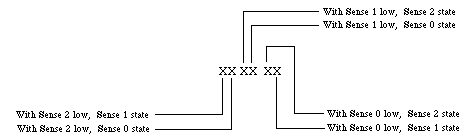
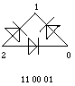
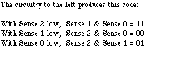
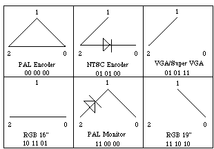
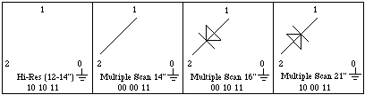
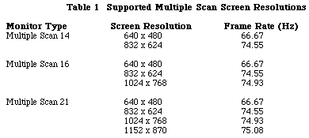
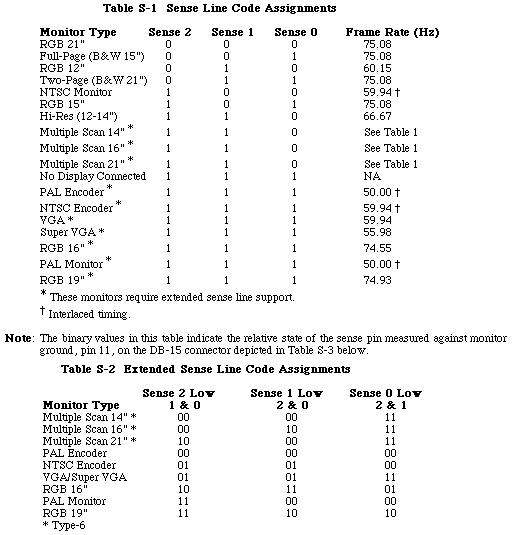
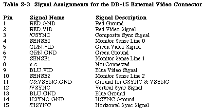

|
|
Ever wonder how your Mac knows what monitors are connected to it? Well, this
Technical Note will tell you more than you probably wanted to know.
[Sep 01 1992]
|
Sense Lines
The sense line protocol was implemented when Apple recognized the need for a
mechanism that would allow a display card to identify the monitor connected to
it. For example, the built-in video display circuitry on CPUs such as the
Macintosh Quadras and the PowerBook 160 and 165c can configure itself according
to the monitor that is connected at boot time. The identification scheme works
fine, but there is one problem. There are only three sense lines and this
limits the number of different monitors to seven plus the no-connect case. To
overcome this limitation, newer display cards and built-in video use extensions
to the sense line scheme that allow for new codes.
The first extension, type-7, is based on the following idea: When the display
circuitry senses a configuration that in the original scheme signals "no
display connected" (i.e. when none of the three sense lines are grounded), the
card pulls down each sense line, one by one, and reads what the other lines
return. To return a unique code, the only requirement is that the sense lines
be interconnected, in the cable or the monitor itself, by wires or diodes. The
beauty of this idea is that existing monitors are detected correctly and newer
monitors can have their own encoding. The circuitry for detecting new monitors
is relatively simple and has no active components. Adding the encoding to new
or existing monitors involves only inexpensive diodes and wire. The type-6
extension has a similar approach.
Back to top
The Original Scheme
In the original scheme, the display circuitry determines the type of monitor
attached by reading three sense lines and comparing the signal value to ground.
By convention, the sense lines are identified as 2, 1, and 0. Given three lines
and two different states, on or off, there are a total of eight possible
combinations. For a monitor to be recognized, a sense line on the monitor side
is connected to ground to be read as a binary 0, or left unconnected to be read
as a binary 1.
The first seven monitors listed in Table S-1 show the required sense line
states for them to be recognized using the original sense line scheme. It's
worth noting that monitors using the original scheme need only have their sense
lines read once to determine the monitor type. As new monitor types became
available for the Macintosh, the extended sense line protocol was
implemented.
Back to top
Extended Type-7 Sense Codes
The extended sense line protocol is one of those oddities of software
engineering that at first seems to defy logic. One wonders how late it was in
the evening and how many cans of Mountain Dew were consumed before the protocol
notation was defined. The protocol sets a standard for defining a 6-bit binary
number that represents how the sense lines must respond for the monitor to be
recognized correctly.
With this unusual introduction, let's step back. Under the original scheme,
sense lines were compared to ground to determine their state. To reiterate,
with three pins there are a total of eight possible combinations, 000 (all
grounded) to 111 (none grounded). Seven combinations of the sense line states
are assigned to early monitor types. The eighth combination, 111 (signifying
"no display connected" in the original scheme), is used to signal the extended
type-7 sense line code protocol. This is also known as the no-connect sense
line code protocol. The type-7 designation derives from the fact that the three
sense lines are high relative to ground and can be represented in binary format
as 0b111 or $07.
To implement the type-7 sense line protocol, the sense lines get tied to each
other within the monitor using a combination of straight wire and/or diode
connections. When the display system software reads the state of the three
monitor sense lines and finds that none of them are grounded, it begins dynamic
polling. The software tells the video card/hardware to assert each sense line
and read the other two lines. Instead of being compared to ground, each line is
compared to the asserted line. If a sense line has the same state as the
asserted sense line, the state equates to a binary 0, otherwise it is binary
1.
The diagram in Figure 1 illustrates the type-7 sense line protocol notation.
There are three pairs of binary numbers. Each pair of binary digits represents
the relative state of two sense line pins to the third, which is held low. The
pairs are always in the order: sense 2 low, sense 1 low, sense 0 low. Each bit
in a pair is sense line specific, with the higher sense line bit to the left.

Figure 1 - Extended Type-7 Sense Line Decode Method
To make "sense" of the protocol notation, we now present a diagram showing a
hypothetical sense line interconnection. Given the extended sense line notation
11 00 01, Figure 2 shows how the monitor cable sense lines would be connected
for the system to detect that extended monitor type. The diagram uses the
type-7 ordering, going from sense line 2 on the left to line 0 on the right.


Figure 2 - Extended Type-7 Sense Line Decode Example
In Figure 2, the three points of the triangle correspond to the three sense
lines. The diodes and wires show the required connection. The 6-bit binary
number below the diagram corresponds to the result that will be read when
polled. It is read: when 2 is pulled low, 1 and 0 return the first two digits
(11); when 1 is pulled low, 2 and 0 return the second two bits (00); when 0 is
pulled low, 2 and 1 return the last two bits (01).

Figure 3 - Extended Type-7 Sense Line Decode Diagram
Figure 3 shows the sense line connections for the monitors that require type-7
coding. It is important to clarify the NTSC Encoder and PAL Monitor diagrams
where it might appear a diode is missing. For the NTSC Encoder the binary
extended notation is 01 01 00. One might think for the last pair of binary
digits, 00, to make sense there must be diode between sense lines 0 and 1. In
fact, since sense line 1 is wired to sense line 2, asserting sense line 0 means
that sense lines 2 and 1 will be read as the same state. Similar logic applies
to the PAL Monitor diagram. This technique saves the cost of an extra diode.
Also, for the PAL Encoder diagram, any one of the three sense line
interconnections could be removed while maintaining the same extended sense
line logic.
Back to top Extended Type-6 Sense Line Protocol
With the implementation of the Display Manager, the sense line protocol was
extended further for a new family of monitors. The same method that gives the
extended type-7 sense line protocol its designation applies to the three cases
where one sense line is grounded. For the extended type-6 sense line protocol,
pin 4, i.e. sense line 0, is grounded to pin 11 (see Table S-3) and the binary
notation is expressed as 0b110 ($06) with the least significant bit
representing sense line 0. From Table S-1 below, note that the sense line
configuration for this case corresponds to the Apple Hi-Res monitor. To extend
the support of monitors in this family, one can add three new codes by
connecting sense lines 1 and 2 with a jumper, or a diode in either direction.
These new extended type-6 sense codes support three new monitor types which are
capable of supporting the standard 640x480 resolution and other resolutions.
See "Multiple Scan Monitors" below. The extended type-6 sense line decode
diagram is presented in Figure 4.

Figure 4 - Extended Type 6 Sense Line Decode Diagram
Back to top Multiple Scan Monitors
The Power Macintosh VRAM expansion cards include support for three new monitor
types which use the extended type-6 sense codes. These new types are multiple
scan rate monitors which can display in multiple screen resolutions. The VRAM
expansion cards being shipped with the Power Macintosh units will support the
multiple scan monitors with the resolutions listed in Table 1 on the next page.
Note that the Apple Multiple Scan 17 Display is sensed as a multiple scan 16
display type and the Apple Multiple Scan 20 Display is sensed as a multiple
scan 21 display type.

Back to top Summary
The three tables below summarize the contents of this tech note.

|
Note:
In this table, the column under "Sense 2 Low 1 & 0" indicates the
values the software is reading from monitor sense lines 1 and 0 while driving
sense line 2 low. Suppose you have a PowerBook 180c and you want it to believe
there is an Apple 16" RGB monitor attached. The sense line code in Table S-2
for this monitor is 10 11 01. As shown in Figure 3, this sense code equates to
sense line 2 being connected to sense line 0 with a jumper. Based on Table S-3,
your tying pin 4 to pin 10 will make the PowerBook think that the 16" monitor
is attached. It's important to recognize that pins 4 and 10 in this example
must not be tied to ground, otherwise a 12" RGB monitor would be indicated.
|

Back to top References
Guide to the Macintosh Family Hardware, Third edition, Video
Displays
develop Issue 3, "Macintosh Display Card 8*24GC: The Naked Truth"
Technical Note M.HW.ColorMonitors - HW 8 - Color Monitor Connections
Back to top
Downloadables
|

|
Acrobat version of this Note (420K)
|
Download
|
Back to top
|